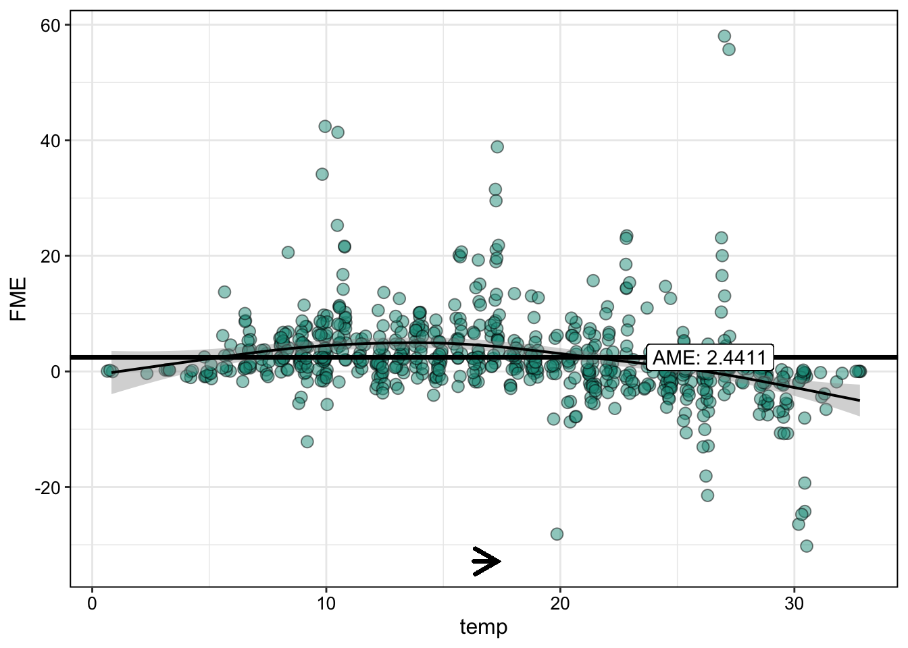

This package implements forward marginal effects (FMEs), a model-agnostic framework for interpreting feature effects in machine learning models. FMEs are the simplest and most intuitive way to interpret feature effects - we explain here how they are computed and why they should be preferred to existing methods. Currently, fmeffects supports 100+ regression and (binary) classification models:
- All models from the tidymodels, mlr3 and caret libraries.
- Native support for
lm-type models, e.g.glmorgam.
Installation
CRAN:
install.packages("fmeffects")GitHub:
if (!require("remotes")) {
install.packages("remotes")
}
remotes::install_github("holgstr/fmeffects")Quickstart
See here for an in-depth tutorial. The big advantage of FMEs is that they are interpreted similar to beta coefficients in linear regression models. Consider the following example: how does an increase in temperature (temp) by 1°C affect bike rentals (count)?
Train a Model
tidymodels
# Train a model with tidymodels:
library(tidymodels)
forest <- rand_forest() %>%
set_mode("regression") %>%
set_engine("ranger")
forest <- forest %>% fit(count ~ ., data = bikes)
mlr3
# Train a model with mlr3:
library(mlr3verse)
task <- as_task_regr(x = bikes, target = "count")
forest <- lrn("regr.ranger")$train(task)Compute effects
effects <- fme(model = forest,
data = bikes,
features = list(temp = 1))
summary(effects)
#>
#> Forward Marginal Effects Object
#>
#> Step type:
#> numerical
#>
#> Features & step lengths:
#> temp, 1
#>
#> Extrapolation point detection:
#> none, EPs: 0 of 731 obs. (0 %)
#>
#> Average Marginal Effect (AME):
#> 56.7848Plot effects
plot(effects)
On average, an increase in temperature by 1°C results in an increase in the predicted number of bike rentals by more than 56. This is called the average marginal effect (AME).
Model Overview
Let’s compute the AME for every feature of the model:
overview <- ame(model = forest,
data = bikes)
summary(overview)
#>
#> Model Summary Using Average Marginal Effects:
#>
#> Feature step.size AME SD 0.25 0.75 n
#> 1 season winter -906.3152 452.5878 -1271.0584 -600.2563 550
#> 2 season spring 133.4859 560.2646 -251.9123 656.0786 547
#> 3 season summer 290.1049 538.7409 -38.9006 749.0648 543
#> 4 season fall 522.5996 569.6906 44.5897 1109.532 553
#> 5 year 0 -1899.879 633.9108 -2386.0419 -1505.6763 366
#> 6 year 1 1784.2169 512.4153 1437.0613 2188.87 365
#> 7 holiday no 192.3511 243.8668 88.2007 234.6339 21
#> 8 holiday yes -125.4963 162.4853 -201.8025 -16.1199 710
#> 9 weekday Sunday 162.5495 191.207 18.7489 271.2774 626
#> 10 weekday Monday -157.9409 223.1961 -265.1487 -4.9606 626
#> 11 weekday Tuesday -116.1417 198.0911 -202.525 12.3244 626
#> 12 weekday Wednesday -48.2876 175.2334 -124.9116 62.7098 627
#> 13 weekday Thursday 12.3041 164.3111 -69.5711 86.6357 627
#> 14 weekday Friday 58.2788 166.217 -23.7812 138.4033 627
#> 15 weekday Saturday 109.3594 171.4439 3.0084 191.9563 627
#> 16 workingday no -40.2099 132.4716 -139.6087 63.0035 500
#> 17 workingday yes 48.4213 152.836 -66.5641 141.8286 231
#> 18 weather misty -215.4948 314.4225 -406.0824 -66.8453 484
#> 19 weather clear 366.836 321.0056 146.1407 460.0033 268
#> 20 weather rain -710.9229 338.3372 -967.2359 -477.8959 710
#> 21 temp 1 56.7848 165.6973 -23.7236 103.5828 731
#> 22 humidity 0.01 -20.1036 60.3589 -36.062 11.4318 731
#> 23 windspeed 1 -23.4009 76.1323 -53.8099 15.4921 731